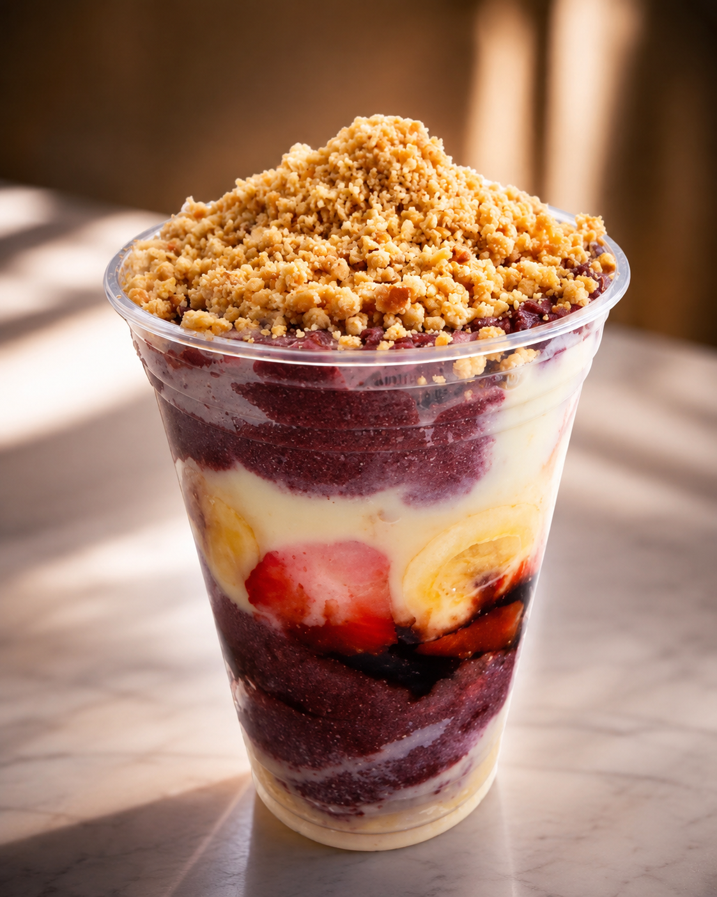

Escolha o tamanho
De 300 a 700 ml, conforme a família de produto.
Escolha o tamanho, combine sabores e peça açaí, milk-shake, sorvetes e sobremesas geladas no São Marcos, em Valinhos.

Valores informados no cardápio atual. A disponibilidade e o total final podem variar conforme o canal de pedido.
No milk-shake, o preço tradicional já inclui uma cobertura e um acompanhamento. Quer reforçar? Cada adicional extra custa R$ 2,00.
De 300 a 700 ml, conforme a família de produto.
Tradicionais, trufados, frutas e opções de sorvete.
Caldas, acompanhamentos e extras aparecem nos detalhes do produto.

 Extras do milk-shake: + R$ 2,00 cada
Extras do milk-shake: + R$ 2,00 cada
Uma seleção de produtos do Açaí do Dudu para mostrar variedade sem inventar uma montagem que a loja não entrega.

Esta imagem apresenta uma proposta conceitual de renovação visual da fachada, desenvolvida pela Olegario Tech. A loja atual permanece no mesmo endereço e continua atendendo normalmente.
Estamos em uma esquina movimentada do bairro, com atendimento direto e opções de pedido pelos aplicativos.
Endereço:
Rua Claudemires dos Santos, nº 82 — São Marcos
WhatsApp:
(19) 99128-8849
Pedidos:
WhatsApp, iFood e 99